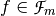
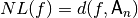
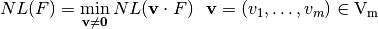
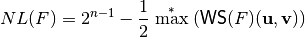
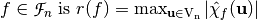
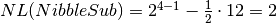

Nonlinearity¶
Description¶
In order to provide confusion, cryptographic functions must lie at large Hamming distance to all affine functions. Because of Parseval’s Relation, any Vector Boolean function has correlation with some affine functions of its input. This correlation should be small: the existence of affine approximations of the Boolean functions involved in a cipher allows to build attacks on this system (see, [Matsui:93] for block ciphers and [DingXS:91] for stream ciphers).
The nonlinearity of a Boolean function  is defined as the Hamming distance between f and the subspace of affine functions [PieprzykF:88]: .
The nonlinearity of a Vector Boolean function  is defined as the minimum among the nonlinearities of all component functions of F [Nyberg:92]:
is defined as the minimum among the nonlinearities of all component functions of F [Nyberg:92]:

The nonlinearity of F can be expressed in terms of the Walsh coefficients by the following theorem:
Let , the nonlinearity of F can be calculated in terms of the maximum of the absolute values of its Walsh Spectrum without taking into account the element of its first row and column, as follows:

Let  , the nonlinearity of f can be expressed in terms of its Walsh transform as follows:
, the nonlinearity of f can be expressed in terms of its Walsh transform as follows:
The spectral radius of a Boolean function .
This criterion is a measure of the distance of a Vector Boolean function and all Affine Vector Boolean functions. If this distance is small, it is possible to mount affine approximations of the Vector Boolean functions involved in a cipher to build attacks (called linear attacks) on a block cipher [Matsui:94]. In the case of stream ciphers, these attacks are called fast correlation attacks. Thus, this property is useful to assess the resistance of a Vector Boolean function to linear attacks (including correlation attacks), i.e., attacks where the function F is approximated by an affine function.
Library¶
The method used to obtain the nonlinearity of a Vector Boolean function is the following:
void nl(NTL::RR& x, VBF& F)
The method used to obtain the spectral radius of a Vector Boolean function is the following:
void SpectralRadius(NTL::ZZ& x, VBF& F)
The method used to the maximum nonlinearity that can be achieved by a Vector Boolean function with the same number of input bits and output bits is the following:
NTL::RR nlmax(VBF& F)
The method used to obtain the type of function in terms of nonlinearity is the following:
void typenl(int& typenl, VBF& F)
Example 1¶
The following program provides the nonlinearity of a Vector Boolean function given its Truth Table together with the maximum nonlinearity that can be achieved by a Vector Boolean function with the same number of input bits and output bits.
#include <iostream>
#include <fstream>
#include "VBF.h"
int main(int argc, char *argv[])
{
using namespace VBFNS;
VBF F;
NTL::mat_GF2 T;
ifstream input(argv[1]);
if(!input) {
cerr << "Error opening " << argv[1] << endl;
return 0;
}
input >> T;
F.puttt(T);
input.close();
cout << "The spectral radius of the function is " << SpectralRadius(F)
<< endl;
cout << "The nonlinearity of the function is " << nl(F) << endl;
cout << "The maximum nonlinearity that can be achieved by
a Vector Boolean function with the same dimensions is "
<< nlmax(F) << endl;
return 0;
}
If we use the NibbleSub S-box Truth Table as input, the output would be the following:
The spectral radius of the function is 12
The nonlinearity of the function is 2
The maximum nonlinearity that can be achieved by
a Vector Boolean function with the same dimensions is 5
The following figure represents the Walsh Spectrum of NibbleSub and emphasizes in blue its maximum absolute values.

From definition we have 
Example 2¶
The following program provides the nonlinearity of a Vector Boolean function given its polynomial representation in ANF together with the maximum nonlinearity that can be achieved by a Vector Boolean function with the same number of input bits and output bits, and the type of function in terms of nonlinearity.
#include <iostream>
#include <fstream>
#include "VBF.h"
int main(int argc, char *argv[])
{
using namespace VBFNS;
VBF F;
vec_pol p;
ifstream input(argv[1]);
if(!input) {
cerr << "Error opening " << argv[1] << endl;
return 0;
}
input >> p;
F.putpol(p);
input.close();
cout << "The nonlinearity of the function is " << nl(F) << endl;
cout << "The maximum nonlinearity that can be achieved by
a Vector Boolean function with the same dimensions is "
<< nlmax(F) << endl;
int type;
typenl(type, F);
if (type == BENT) {
cout << "It is a bent function" << endl;
} else if (type == ALMOST_BENT) {
cout << "It is an almost bent function" << endl;
} else if (type == LINEAR) {
cout << "It is a linear function" << endl;
}
return 0;
}
If we use the  as input, the output would be the following:
as input, the output would be the following:
The nonlinearity of the function is 6
The maximum nonlinearity that can be achieved by
a Vector Boolean function with the same dimensions is 6
It is a bent function
As the nonlinearity of this Boolean function is maximal, it is a bent function.